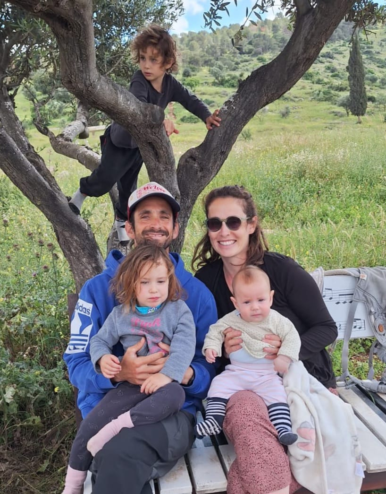

קצת עליי
מאז שאני זוכרת את עצמי, ספורט ותנועה היו חלק משמעותי מהחיים שלי. אחרי בית הספר הייתי יוצאת לריצה בשדות או רוקדת בחוג מחול שלוש פעמים בשבוע. אחרי הצבא, המשכתי באופן טבעי לעולם הספורט והתחלתי ללמוד הדרכת פילאטיס מזרן בתל אביב. במקביל ללימודי התואר הראשון במנהל עסקים, המשכתי ללמוד ולהעמיק בתחומים שונים בעולם התנועה והכושר – ניהול ספורט, הדרכת חדר כושר וספורטתרפיה. עם הזמן הבנתי שלימודים אקדמיים סטטיים פחות מתאימים לי, ושאני רוצה להיות בתנועה, לעבוד עם אנשים ולהמשיך ללמוד דרך הגוף והשטח. משם המשכתי ללימודי יוגה, פילאטיס מכשירים והתעמלות לגיל השלישי. במהלך השנים יצא לי לעבוד עם אוכלוסיות שונות ומגוונות, ביניהן גם נשים בהריון. אבל רק כשהגעתי להריון הראשון שלי הבנתי עד כמה החוויה שונה – בין להדריך אישה בהריון כשלא חווית הריון בעצמך, לבין להבין באמת מה הגוף והנפש עוברים כשאת בעצמך שם. במהלך ההריון למדתי קורס אימון לנשים בהריון, ובהמשך המשכתי גם ללימודי הדרכת הכנה ללידה. מאז אותו הריון ראשון עברתי עוד שתי הריונות, שלוש לידות טבעיות ופעילות, והיום אני אמא לשלושה קטנטנים.
למה דווקא נשים בהיריון ולאחר לידה?
אחרי כל השנים האלה, אין לי ספק שהאוכלוסייה שהכי כיף לי לאמן היא נשים בהריון ולאחר לידה. מבחינתי, הריון הוא לא תקופה שבה צריך לרדוף אחרי קוביות בבטן, לחטב את הישבן או "לשרוף" כמה שיותר קלוריות. המטרה היא אחרת. אני רוצה לעזור לך לעבור את ההריון בכיף ובהנאה, להישאר פעילה וחיונית, לשמור על תפקוד הגוף ולהגיע ללידה עם תחושת ביטחון וכלים שיעזרו לך בדרך. במהלך השנים ליוויתי נשים בהריון בזום, בקבוצות ובאימונים אישיים, והבנתי עד כמה לאימון יש השפעה שהיא הרבה מעבר לגוף. הידע המקצועי, התרגול, ההכוונה והתמיכה יכולים לתת לאישה כלים להתמודדות עם השינויים שהיא חווה – פיזית ורגשית. וזה בדיוק המקום שבו התאהבתי. לא רק באימון עצמו, אלא בליווי הכולל של אישה בתקופה כל כך משמעותית בחייה. אני מתרגשת יחד עם המתאמנות שלי לפני בדיקות, שמחה איתן על כל התקדמות ודומעת בכל פעם שמגיעה תמונה של אמא ותינוק בידיה.
הגישה האימונית שלי
אני מאמינה שאימון בתקופת ההריון לא צריך להיות מלחמה בגוף. הוא צריך להיות דרך להכיר את הגוף המשתנה, לעבוד איתו ולא נגדו, ולתת לו את הכוח והתמיכה שהוא צריך בתקופה הזו. האימון מבחינתי הוא לא רק לגוף – הוא גם לנפש. במהלך תשעת חודשי ההריון הגוף משתנה, אבל גם הנפש עוברת לא מעט. יש התרגשות, חששות, שינויים, חוסר ודאות ולעיתים גם כאבים ואי נוחות. לכן אני מאמינה בליווי שמסתכל על האישה כולה. המטרה שלי היא לעזור לך להרגיש חזקה, חיונית ותפקודית במהלך ההריון, להגיע ללידה עם יותר ביטחון וכלים, ולתת לגוף את התנאים הטובים ביותר להתאוששות בתקופה שלאחר הלידה. לא צריך לקרוע את עצמך כדי להיות בכושר בהריון. צריך לדעת איך להתאים את התנועה לגוף, לשלב בין ידע מקצועי לבין הקשבה לעצמך, ולמצוא את האיזון שמתאים לך. אני כאן כדי לעזור לך למצוא את האיזון הזה.
הסמכות וניסיון
- מדריכת פילאטיס מזרן
- מדריכת פילאטיס מכשירים
- מדריכת יוגה ויניאסה
- מאמנת כושר לנשים בהריון ולאחר לידה
- ספורטתרפיה
- אימון כושר לגיל השלישי
- מדריכת הכנה ללידה